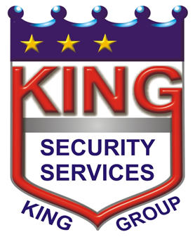
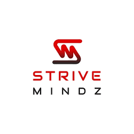
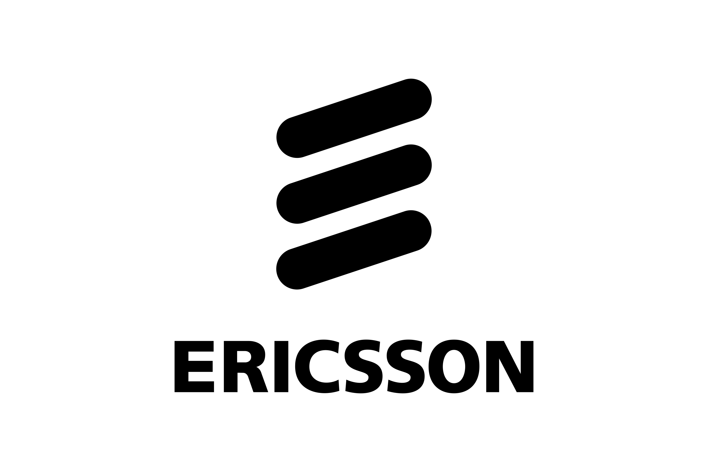
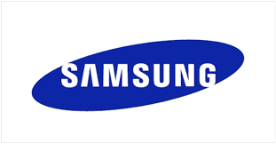
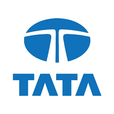

2024
Project Manager - IT

King Security Guards Services Pvt. Ltd. || Aug 2024 – Till date
- Coordinated ERP development, issue resolution, enhancements, and new feature implementation with development and QA teams.
- Managed project planning, daily tracking, task assignments, and execution timelines to ensure timely delivery.
- Conducted daily team meetings, progress reviews, and follow-ups to drive project execution.
- Collaborated with vendors and service providers for project updates, deliverables, and operational support.
- Managed IT assets, procurement, maintenance, inventory tracking, and operational cost monitoring.
- Administered WLAN, Sophos Firewall, and Layer 2/Layer 3 network infrastructure to ensure secure and reliable connectivity.
- Oversaw network security, hardware maintenance, troubleshooting, and end-user technical support activities.
- Supported office administration, facility management, vendor coordination, and operational compliance activities.
- Managed administrative procurement, service contracts, asset records, and office infrastructure requirements.
- Coordinated with internal departments and external stakeholders to ensure smooth day-to-day business operations.
2022
Project Coordinator

Strivemindz Pvt. Ltd. || Jun 2022 – Nov 2023
- Coordinated web designers, developers, and QA teams to ensure timely and successful project delivery.
- Managed Agile Scrum ceremonies, sprint planning, tracking, and workflow coordination.
- Monitored project progress, task assignments, and team activities using Jira.
- Facilitated daily Scrum meetings to track deliverables, resolve blockers, and improve team collaboration.
- Acted as the primary point of contact for client communications, feedback, and requirement discussions.
- Supported project execution, resource coordination, and on-time delivery across multiple software projects.
- Conducted Jira onboarding and training sessions for new team members and stakeholders.
2016
Cluster Team Lead
Nokia Networks India Pvt. Ltd. || Jan 2016 – Sep 2018
- Led Voice & Data KPI improvement initiatives across the telecom network.
- Improved network uptime and reduced MTTR through proactive operations and vendor coordination.
- Performed outage analysis, root cause investigation, and network optimization activities.
- Enhanced Voice and Data performance through capacity planning, transmission optimization, and traffic balancing.
- Managed preventive maintenance, infrastructure restoration, and telecom asset operations.
- Monitored network health, QoS metrics, and service performance to ensure operational excellence.
2014
Zone Technical Manager
Telenor India Pvt. Ltd. || Jun 2014 – Dec 2015
- Coordinated with IP vendors to ensure timely resolution and sign-off of network outages.
- Managed Energy, Infrastructure, and BSS partner teams to maximize network uptime and reduce MTTR.
- Performed root cause analysis of infrastructure outages and drove corrective action plans.
- Led LNOC operations, including fault management, preventive maintenance, and process compliance.
- Maintained QoS, network availability, and operational KPIs above target levels.
- Oversaw BTS rollout, integration, acceptance testing, and network optimization initiatives.
2013
BSS Tier-2 Support
NOKIA SOLUTIONS AND NETWORKS || Mar 2013 – Jun 2014
- Managed maintenance and operations of Nokia BSC infrastructure for Vodafone UP East network.
- Performed software/hardware upgrades, capacity expansion, OSS over IP, GB over IP configuration,
and BSC implementation activities.
- Troubleshot critical BSS faults and handled KPI-impacting incidents, emergency outages, and network quality issues.
- Coordinated with NOC, care teams, and field engineers for early restoration and RCA submission during critical outages.
- Supported execution of O&M activities, including BTS upgrades, BINOS upgrades, optical connectivity implementation,
synchronization management, and network optimization tasks.
- Performed BSS parameter audits, preventive maintenance, backup management, fault analysis,
and infrastructure escalation activities to ensure network reliability and performance.
2008
BSS Engineerr
NOKIA SOLUTIONS AND NETWORKS || Mar 2008 – Feb 2013
- BSS/BTS operations & maintenance - 2G, 3G
- Field engineering & troubleshooting - /br
Handled site creation, TRX addition/deletion, re-homing, dual-band implementation, and alarm rectification activities.
- Project Roll-out Support -Project, Planning, Transmission, and Infrastructure teams for smooth network rollout and maintenance operations
- Supported transmission and network optimization activities including E1 routing, PDH/SDH shifting, and loop formation.
- Performed outage analysis, RCA preparation, KPI monitoring, and preventive action planning to improve network availability.
- Managed vendor coordination, infrastructure reviews, and material/inventory management activities.
2007
Network Engineerr – Electrical
NOKIA SOLUTIONS AND NETWORKS || Jul 2007 – Feb 2008
- Managed manpower, material, and infrastructure operations for BSC and BTS sites across the Jhansi zone.
- Handled maintenance and upgrades of DG sets, power plants, electrical infrastructure, and network support systems.
- Coordinated with vendors and field teams for network rollout, site acceptance, preventive maintenance, and outage resolution.
- Managed MIS reporting, fuel optimization, inventory tracking, OPEX control, and MTTR improvement initiatives.
2007
OMCR Engineerr
NOKIA SOLUTIONS AND NETWORKS || May 2007 – Jul 2007
- Monitored Vodafone UP East network infrastructure including BSCs and BTS sites.
- Generated maintenance reports, monitored network availability, and coordinated with field teams for
fault resolution and network performance improvement.
2006
OMCR Engineer

Ericsson India Pvt. Ltd.|Mar 2006 – Apr 2007
- Monitored network alarms and provided BSS support for Airtel UP East network operations.
- Coordinated with field engineers and installation teams for network fault resolution and optimization support.
2004
HHP Service Engineer

Samsung India Pvt. Ltd. || Jun 2004 – Feb 2006
- Performed diagnosis, troubleshooting, and repair of Samsung mobile devices under warranty and service programs.
- Managed end-to-end warranty repair processes, ensuring timely service delivery and customer satisfaction.
- Maintained inventory and tracking of spare parts to support efficient repair operations.
- Conducted technical inspections, fault analysis, and quality checks to ensure compliance with service standards.
- Coordinated with service centres and internal teams for repair status tracking and issue resolution.
2003
Service Engineer
Richi India Ltd. || Jan 2003 – Apr 2004
- Responsible for installation, preventive maintenance, troubleshooting, and repair services for Ricoh photocopier
machines across the Prayagraj territory.
- Managed warranty, Annual Maintenance Contract (AMC/4C), and out-of-warranty service requests,
ensuring timely issue resolution.
- Conducted on-site technical support, fault diagnosis, and component replacement to maximise equipment uptime.
- Maintained service records, customer support documentation, and spare parts coordination.
- Built strong customer relationships through prompt service delivery and technical assistance
2001
Apprentice Trainee

TATA Engineering || Dec 2021 – Nov 2002
- Underwent hands-on industrial training in manufacturing and production operations within
a large-scale automotive engineering environment. t
- Gained practical exposure to assembly line processes, production planning, and manufacturing workflows
- Learned fundamentals of Supply Chain Management, inventory movement, and material handling processes.
- Participated in Kaizen and continuous improvement initiatives focused on operational efficiency and productivity enhancement
- Developed an understanding of quality control, process optimization, workplace safety, and industrial best practices